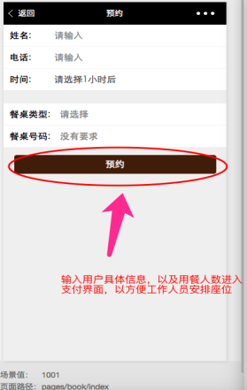
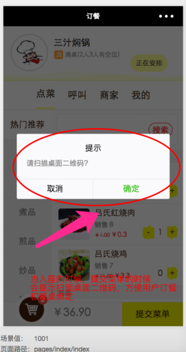

点餐系统项目介绍
联系QQ：727186863
目 录
一 产品介绍
该产品是主要用于餐馆的预约、排队、扫码点餐、支付和评价一体流程的点餐系统。小程序端支持多人点餐、呼叫服务、饭店导航拨号、查看饭店用餐状态、预约、排队、微信支付、现金支付、评价、使用优惠劵以及会员卡等功能。
强大的后台管理系统，可以添加餐品、餐位管理、订单管理、语音实时播报、促销管理、预约排队管理、以及强大的统计报表、分析市场流向、会员动态以及营业额统计。
二 使用流程
2.1 查看状态下两种状态
2.1.1 有座位状态
有空闲桌位状态时，用户只能进行预约动作(需要支付一定金额)，不能进行排队动作。

、
2.1.2 无桌位状态
无桌位状态时，用户可以进行预约和排队两种动作。
2.1.3 排队与预约状态
在排队和预约状态可以选好菜，以节省时间，方便用餐。
2.2 就餐操作指南

2.3 用餐结束
用餐结束，客户可以进行评价。
2.4 其他功能

三 后台介绍
3.1 会员管理系统
会员管理系统，查看管理小程序会员，可以进行模糊查询会员。
3.2 会员等级
会员等级，不同等级不同的订单打折功能，可以修改以及完善。
3.3 菜单管理
菜品管理界面，可以上架已经维护菜品。
3.4 评论查看
后台可以查看小程序端的评论。
3.5 促销管理
促销管理，可以添加优惠劵类型，方便店家发放优惠劵。
3.6 消息提醒
消息提醒，当小程序呼叫服务员，加米饭，加水操作时候会出现消息，只有点击阅读的时候，才取消提醒。
3.7 座位管理
座位管理，可以查看排队人数，以及餐桌类型和添加餐桌。
3.8 预约排队管理
预约排队管理，可以看到预约信息，可以安排座位等动作。
3.9 订单管理界面
3.10 统计界面